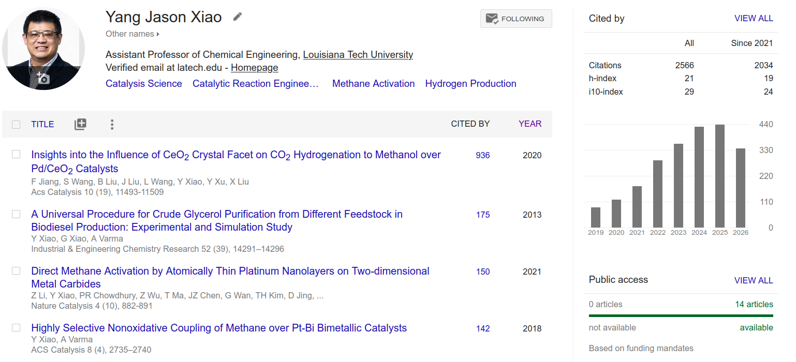
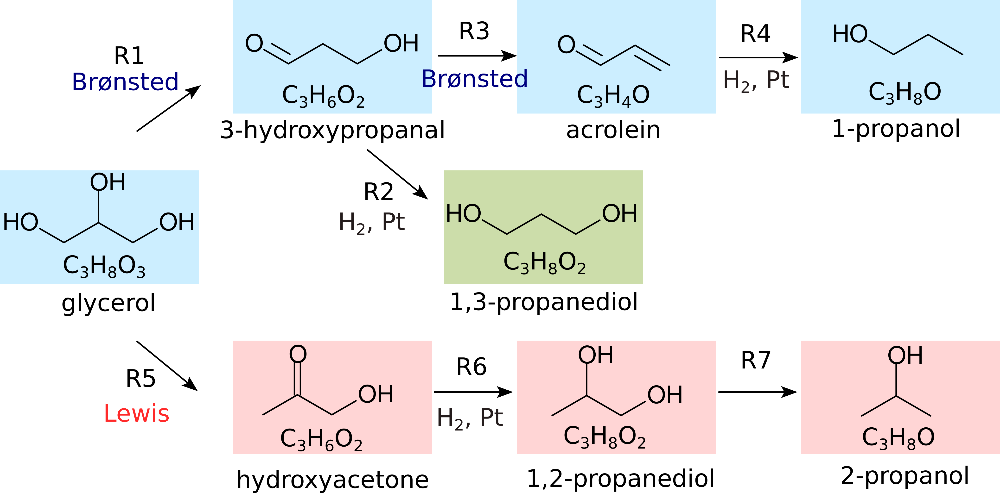
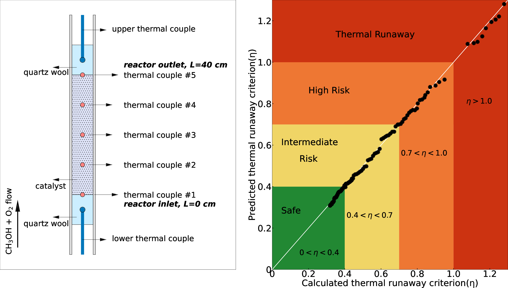
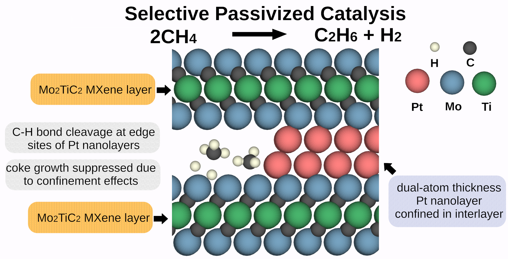
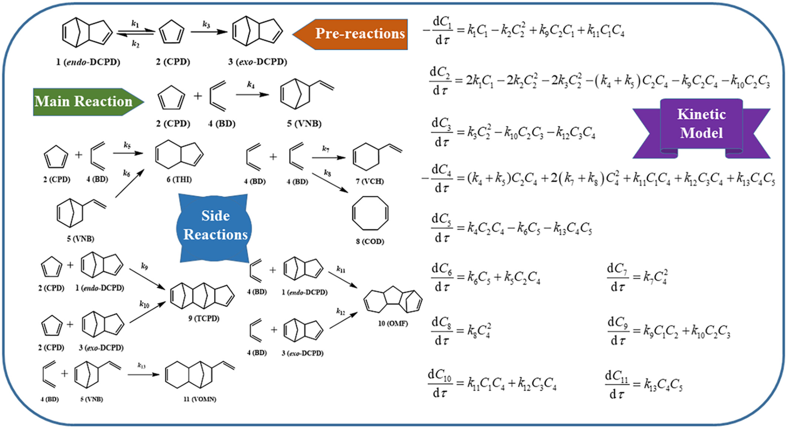
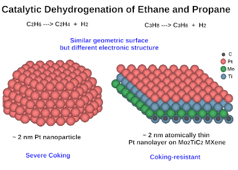
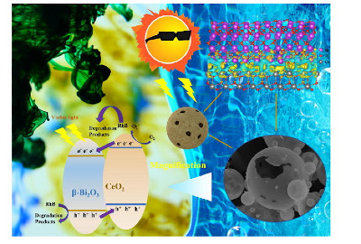
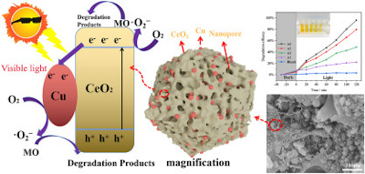
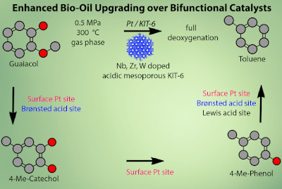

Publications in Peer-Reviewed Journals
Please visit Google Scholar or ORCID. Updated in October 2026.

* corresponding authors; #: equal contribution.
Louisiana Tech University
(38). Joaquin Herrero, Tobias K. Misicko, and Yang Xiao*, Selective Hydrogenolysis of Glycerol to 1,3-Propanediol over Bifunctional Pt/KIT-6 Catalysts Sustainability Science and Technology, 3(2), 024006, 2026. PDF | Link.

(37).#Tobias K. Misicko, #Joaquin Herrero, #Jacob C. Robinson, Daniela S. Mainardi, and Yang Xiao*, Thermal Runaway of Chemical Reactors: An Experimental, Modeling, and Machine-Learning Investigation, Industrial & Engineering Chemistry Research, 2026, 65, 4, 2057-2070. PDF | Link.

(36). #Jacob C. Robinson, #Jiaping Weng, #Tobias K. Misicko, Natalie Remedies, Daniela S. Mainardi, and Yang Xiao*, Non-oxidative Coupling of Methane via Selective Passivized Catalysis (Feature Article), Chemical Communications, 2025, 61, 19183-19194. PDF | Link.

(35). Gabriel Parker#, Tobias K. Misicko#, Tanguy Teriler, Yang Xiao, and Xiao-Ying Yu*, ToF-SIMS Spectral Analysis of Pristine and Neutron Irradiated Single Crystal Tungsten, Results in Surfaces and Interfaces, 2025, 20, 100577. PDF | Link.
(34). Joaquin Herrero#, Peilei He#, Fan Yang, Jiaping Weng, Nicole J. LiBretto, Daniela S. Mainardi, Jeffrey T. Miller*, Yue Wu*, Yang Xiao*, Synergy of Cu(I) and Oxygen Vacancies in CO2 hydrogenative Coupling to Ethanol on Cu/CeO2-x Catalysts, Nano Research, 2025, 18(8): 94907518. PDF | Link.
(33). Rui Zhou, Mingzhou Jin, Zhenglong Li, Yang Xiao, David McCollum, and Alicia Li, Techno-economic Analysis and Network Design for CO2 Conversion to Jet Fuels in the United States, Renewable and Sustainable Energy Reviews, 2025, 210, 115191. PDF | Link.
(32). Hao Li, Xue Liu, Yang Xiao*, and Kun Cao*, One-pot Synthesis of 5-Norbornene-2,3-Dicarboxylic Anhydride with High Exo/Endo Ratio in a Microreactor under High Temperature and Appropriate Pressure, Chemical Engineering Journal, 2024, 498, 155561. PDF | Link.
(31). Hao Li, Xue Liu, Yan Zhang, Yang Xiao*, and Kun Cao* A Kinetic Model of the Cycloaddition Reactions Between Cyclopentadiene and 1, 3-Butadiene for Synthesis of 5-vinyl-2-norbornene, The Canadian Journal of Chemical Engineering, 2024, 102 (5), 1946-1956. PDF | Link.

(30). Zhe Li#, Tobias K. Misicko#, Fan Yang#, Xiaopeng Liu, Zhenwei Wu, Xiaoyang Gao, Tao Ma, Jeffrey T. Miller, Daniela S. Mainardi, Collin D. Wick, Zhenhua Zeng*, Yang Xiao*, Yue Wu*, Two-dimensional Atomically Thin Pt Layers on MXenes: The Role of Electronic Effects During Catalytic Dehydroge nation of Ethane and Propane, Nano Research, 2024, 17 (3), 1251-1258. PDF | SI | Link

(29). Zhichao Shang, Teng Wang, Aoxia Ren, Yong Yu, Yan Zheng, Yuan Tao, Peizhong Feng, Yang Xiao*, Xiaohong Wang*, Hollow Macroporous CeO2/β-Bi2O3 Heterostructure Sphere via One-step Spray Solution Combustion Synthesis for Efficient Photocatalysis, Applied Surface Science , 2023, 619, 156718, PDF | Link

(28). Zhichao Shang, Yong Yu, Hang Yang, Zhongxiang Yang, Yang Xiao*, and Xiaohong Wang*, One-step Solution Combustion Synthesis of Micro/nano-scale Porous Cu/CeO2 with Enhanced Photocatalytic Properties, Journal of Rare Earths, 2023, 41, 2, 250-258. PDF | Link

(27). Yang Xiao*, Anand Ramanathan, Bala Subramaniam*, and Arvind Varma, Guaiacol Hydrodeoxygenation and Hydrogenation over Bimetallic Pt-M (Nb, W, Zr)/KIT-6 Catalysts with Tunable Acidity, ACS Sustainable Chemistry & Engineering, 2022, 10, 4831-4833. PDF | Link

Purdue University
(26). Zhe Li#, Yang Xiao#*, Prabudhya Roy Chowdhury, Zhenwei Wu, Tao Ma, Johnny ZhuChen, Gang Wan, Tae-Hoon Kim, Dapeng Jing, Peilei He, Pratik J. Potdar, Lin Zhou, Zhenhua Zeng, Xiulin Ruan, Jeffrey T. Miller, Jeffrey P. Greeley, Yue Wu*, and Arvind Varma, Direct Methane Activation by Atomically Thin Platinum Nanolayers on Two-dimensional Metal Carbides, Nature Catalysis, 2021, 4, 882-891. PDF | Link.
(25). Ruiping Wei, Xumin Qu, Yang Xiao*, Jingdeng Fan, Gaoli Geng, Lijing Gao, and Guomin Xiao*, Hydrogenolysis of Glycerol to Propanediols over Silicotungstic Acid Catalysts Intercalated with CuZnFe Hydrotalcite-like Compounds, Catalysis Today, 2021, 368, 224-231. PDF | Link.
(24). Chunxiao Xu, Yayong Li, Ryan A. Adams, Vilas G. Pol, Yang Xiao*, Arvind Varma, and Pengwan Chen*, One-step Combustion Synthesis of Carbon-coated NiO/Ni Composites for Lithium and Sodium Storage, Journal of Alloys and Compounds, 2021, 884, 160927. PDF | Link.
(23). Yuanfeng Wu, Yang Xiao, Hui Yuan, Zongqi Zhang, Shengbin Shi, Ruiping Wei, Lijing Gao, and GuominXiao, Imidazolium Ionic Liquid Functionalized UiO-66-NH2 as Highly Efficient Catalysts for Chemical Fixation of CO2 into Cyclic Carbonates, Microporous and Mesoporous Materials, 2021, 310, 110578. PDF | Link.
(22). Feng Jiang, Shanshan Wang, Bing Liu, Jie Liu, Li Wang, Yang Xiao, Yuebing Xu, and Xiaohao Liu, Insights into the Influence of CeO2 Crystal Facet on CO2 Hydrogenation to Methanol over Pd/CeO2 Catalysts, ACS Catalysis, 2020, 10, 11493-11509. PDF | Link.
(21). Zhichao Shang, Zhongxiang Yang, Yang Xiao* and Xiaohong Wang, Ordered Mesoporous Ag/CeO2 Nanocrystalline via Silica-templated Solution Combustion for Enhanced Photocatalytic Performance, Colloids and Surfaces A: Physicochemical and Engineering Aspects, 2020, 604, 125301. PDF | Link.
(20). Yang Xiao*, Rexonni Lagare, Lindsey Blanshan, Enrico N. Martinez, and Arvind Varma, Refinement of the Kinetic Model for Guaiacol Hydrodeoxygenation over Platinum Catalysts, AIChE Journal, 2020, 66, e16913. PDF | Link.
(19). Kanak Roy, Luca Artiglia, Yang Xiao, Arvind Varma and Jeroen A. van Bokhoven, Role of Bismuth in the Stability of Pt-Bi Bimetallic Catalyst for Methane Mediated Deoxygenation of Guaiacol, an APXPS study, ACS Catalysis, 2019, 9, 3694-3699. PDF | Link.
(18). Johnny ZhuChen, Zhenwei Wu, Xiaoben Zhang, Slgi Choi, Yang Xiao, Arvind Varma, Wei Liu, Guanghui Zhang and Jeffrey T. Miller, Identification of the Structure of the Bi Promoted Pt Non-oxidative Coupling of Methane Catalyst: A Nanoscale Pt3Bi Intermetallic Alloy, Catalysis Science & Technology, 2019, 9, 1349-1356. PDF | Link.
(17). Yuan Wang, Yang Xiao* and Guomin Xiao, Sustainable Value-added C3 Chemicals from Glycerol Transformations: A Mini Review for Heterogeneous Catalytic Processes, Chinese Journal of Chemical Engineering, 2019, 27, 1536-1542. PDF | Link.
(16). Xiaoni Du, Xiaohong Wang and Yang Xiao, Bi5O7NO3 and Ag/Bi5O7NO3 Composites: One-step Solution Combustion Synthesis, Characterization and Photocatalytic Properties, CrystEngComm, 2018, 20, 7536-7542. PDF | Link.
(15). Yang Xiao, Yuan Wang, and Arvind Varma, Low-Temperature Selective Oxidation of Methanol over Pt-Bi Bimetallic Catalysts, Journal of Catalysis, 2018, 363, 144-153. PDF | Link.
(14). Yang Xiao, and Arvind Varma, Highly Selective Nonoxidative Coupling of Methane over Pt-Bi Bimetallic Catalysts, ACS Catalysis, 2018, 8, 2735-2740. PDF | Link.
(13). Yang Xiao, and Arvind Varma, Bio-oil Upgrading Using Methane: A Mechanistic Study of Model Compound Guaiacol Reactions over Pt-Bi Bimetallic Catalysts, ACS Sustainable Chemistry & Engineering, 2018, 6, 17368-17375. PDF | Link.
(12). Yang Xiao, and Arvind Varma, Kinetics of Glycerol to Hydrocarbon Fuels via Pd/H-ZSM-5 Catalyst, AIChE Journal, 2017, 63, 5445-5451. PDF | Link
(11). Yang Xiao, and Arvind Varma, Kinetics of Guaiacol Deoxygenation over Pt-Bi Catalyst, Reaction Chemistry & Engineering, 2017, 2, 36-43. PDF | Link
10. Yang Xiao, Jeffrey Greeley, Arvind Varma, Zhi-Jian Zhao, and Guomin Xiao, An Experimental and Theoretical Study of Glycerol Oxidation to 1,3-Dihydroxyacetone Over Bimetallic Pt-Bi Catalysts, AIChE Journal, 2017, 63, 705-715. PDF | Link
(9).Yang Xiao, and Arvind Varma, Conversion of Glycerol to Hydrocarbon Fuels via Bifunctional Catalysts, ACS Energy Letters, 2016, 1, 963-968. PDF | Link
(8). Danni Gao, Yang Xiao, and Arvind Varma, Guaiacol Hydrodeoxygenation over Platinum Catalyst: Reaction Pathways and Kinetics, Industrial & Engineering Chemistry Research, 2015, 54, 10638-10644. PDF | Link
(7). Yang Xiao, and Arvind Varma, Catalytic Deoxygenation of Guaiacol Using Methane, ACS Sustainable Chemistry & Engineering, 2015, 3, 2606-2610. PDF | Link
(6). Haoyang Li, Xiaomei Pan, Yang Xiao, Guomin Xiao, and Jinjin Huang, Simulation of Biodiesel Industrial Production via Solid Base Catalyst in a Fixed-bed Reactor, Journal of Southeast University (English Edition), 2014, 30, 380-386. Link
(5). Yang Xiao, Guomin Xiao, and Arvind Varma, A Universal Procedure for Crude Glycerol Purification from Different Feedstocks in Biodiesel Production: Experimental and Simulation Study, Industrial & Engineering Chemistry Research, 2013, 52, 14291-14296. PDF | Link
(4). Yang Xiao, Haoyang Li, Guomin Xiao, Lijing Gao, and Xiaomei Pan, Simulation of the Catalytic Reactive Distillation Process for Biodiesel Production via Transesterification, International Conference on Materials for Renewable Energy and Environment, Chengdu, China, 2013, 1, 196-199. Link
(3). Guomin Xiao, Haoyang Li, and Yang Xiao, Applications of Chemical Simulation Softwares in the Course of Transport Phenomena, Chemical Industry Times, 2012, 26, 53-59. Link
(2). Yang Xiao, Lijing Gao, Guomin Xiao, Baosong Fu, and Lei Niu, Experimental and Modeling Study of Continuous Catalytic Transesterification to Biodiesel in a Bench-Scale Fixed-Bed Reactor, Industrial & Engineering Chemistry Research, 2012, 51, 11860-11865. PDF | Link
(1). Yang Xiao, Lijing Gao, Guomin Xiao, and Jianhua Lv, Kinetics of the Transesterification Reaction Catalyzed by Solid Base in a Fixed-bed Reactor, Energy & Fuels, 2010, 24, 5829-5833. PDF | Link